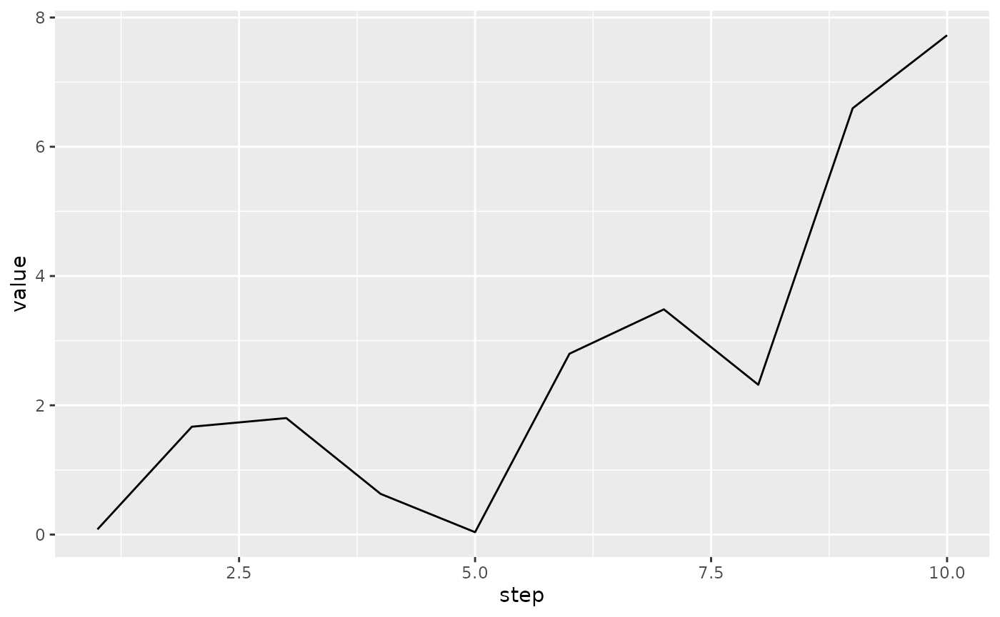

tfevents stores events in files inside a logdir, there might be many files tfevents records files in the log directory and each file can contain many events.
tfevents provides functionality to read records writen to the log directory and to extract their value in a convenient representation, useful if you want to analyse the results from R.
Let’s write a few records a temporary directory, then we’ll use tfevents functionality to read the data into R.
temp <- tempfile()
set_default_logdir(temp)We can collect all events from the logdir with:
events <- collect_events(temp)
events
#> # A tibble: 12 × 4
#> event run step summary
#> <tfvnts_v> <chr> <int> <tfvnts_s>
#> 1 <./ 0> . 0
#> 2 <./ 0> . 0 [1]
#> 3 <./ 1> . 1 [1]
#> 4 <./ 2> . 2 [1]
#> 5 <./ 3> . 3 [1]
#> 6 <./ 4> . 4 [1]
#> 7 <./ 5> . 5 [1]
#> 8 <./ 6> . 6 [1]
#> 9 <./ 7> . 7 [1]
#> 10 <./ 8> . 8 [1]
#> 11 <./ 9> . 9 [1]
#> 12 <./10> . 10 [1]collect_events() returns a tibble with each row
repesenting an event writen to that logdir. Note that the
tibble has 12 rows, 1 more than the number of our calls to
log_event. That’s because every event record file includes
an event storing some metadata, like the time it was created and etc.
The run column indicates the directory within the
logdir that the events were collected from. Although tfevents
only supports writing summary events, tfevents record files can contain
other kind of events like log message, TensorFlow graphs and metadata
information (as we see in this file), in those cases the
summary column will have a NA value. In
summary events it will contain additional information on the
summary.
You might want to collect only the summary events, like those that
were created with log_event, in this case you can pass the
type argument to collect_events specifying the
kind of events that you want to collect.
summaries <- collect_events(temp, type = "summary")
summaries
#> # A tibble: 11 × 6
#> event run step summary tag plugin
#> <tfvnts_v> <chr> <int> <tfvnts__> <chr> <chr>
#> 1 <./ 0> . 0 <text> text text
#> 2 <./ 1> . 1 <hello> hello scalars
#> 3 <./ 2> . 2 <hello> hello scalars
#> 4 <./ 3> . 3 <hello> hello scalars
#> 5 <./ 4> . 4 <hello> hello scalars
#> 6 <./ 5> . 5 <hello> hello scalars
#> 7 <./ 6> . 6 <hello> hello scalars
#> 8 <./ 7> . 7 <hello> hello scalars
#> 9 <./ 8> . 8 <hello> hello scalars
#> 10 <./ 9> . 9 <hello> hello scalars
#> 11 <./10> . 10 <hello> hello scalarsSince the above asked for summary events, the returned data frame can
include additional information like the name of the plugin that was used
to created the summary (eg. scalars, images, audio, etc) and the tag
name for the summary. This data is already included in the objects in
the summary column, but is extracted as columns to make
analyses easier.
You can extract the value out of a summary using the
value function.
value(summaries$summary[1])
#> [1] "hello world"Notice that value extracts values of a single summary
and errors if you pass more summary values. To query all values you can
pass the as_list = TRUE argument. This ensures that
value will always return a list, making it type stable no
matter the size of the summary_values vector that you pass.
# we remove the first summary, as it's a text summary
value(summaries$summary[-1], as_list = TRUE)
#> [[1]]
#> [1] 0.08075014
#>
#> [[2]]
#> [1] 1.668666
#>
#> [[3]]
#> [1] 1.802283
#>
#> [[4]]
#> [1] 0.6288338
#>
#> [[5]]
#> [1] 0.03699721
#>
#> [[6]]
#> [1] 2.798361
#>
#> [[7]]
#> [1] 3.484442
#>
#> [[8]]
#> [1] 2.318138
#>
#> [[9]]
#> [1] 6.595938
#>
#> [[10]]
#> [1] 7.725215If you are only interested in scalar summaries, you can use
type="scalar" in collect_events:
scalars <- collect_events(temp, type = "scalar")
scalars
#> # A tibble: 10 × 7
#> event run step summary tag plugin value
#> <tfvnts_v> <chr> <int> <tfvnts__> <chr> <chr> <dbl>
#> 1 <./ 1> . 1 <hello> hello scalars 0.0808
#> 2 <./ 2> . 2 <hello> hello scalars 1.67
#> 3 <./ 3> . 3 <hello> hello scalars 1.80
#> 4 <./ 4> . 4 <hello> hello scalars 0.629
#> 5 <./ 5> . 5 <hello> hello scalars 0.0370
#> 6 <./ 6> . 6 <hello> hello scalars 2.80
#> 7 <./ 7> . 7 <hello> hello scalars 3.48
#> 8 <./ 8> . 8 <hello> hello scalars 2.32
#> 9 <./ 9> . 9 <hello> hello scalars 6.60
#> 10 <./10> . 10 <hello> hello scalars 7.73Now, values can be expanded in the data frame and you get a ready to use data frame, for example:

Iterating over a logdir
Passing a directory path to collect_events by default
collects all events in that directory, but you might not want to collect
them all at once because of memory constraints or even because they are
not yet written, in this case you can use events_logdir to
create an object, similar to a file connection that will allow you to
load events in smaller batches.
con <- events_logdir(temp)
collect_events(con, n = 1, type = "scalar")
#> # A tibble: 1 × 7
#> event run step summary tag plugin value
#> <tfvnts_v> <chr> <int> <tfvnts__> <chr> <chr> <dbl>
#> 1 <./1> . 1 <hello> hello scalars 0.0808Notice that the first call to collect_events collected
the first scalar summary event in the directory because of
n = 1. The next call will collect the remaining ones as by
default n = NULL.
collect_events(con, type = "scalar")
#> # A tibble: 9 × 7
#> event run step summary tag plugin value
#> <tfvnts_v> <chr> <int> <tfvnts__> <chr> <chr> <dbl>
#> 1 <./ 2> . 2 <hello> hello scalars 1.67
#> 2 <./ 3> . 3 <hello> hello scalars 1.80
#> 3 <./ 4> . 4 <hello> hello scalars 0.629
#> 4 <./ 5> . 5 <hello> hello scalars 0.0370
#> 5 <./ 6> . 6 <hello> hello scalars 2.80
#> 6 <./ 7> . 7 <hello> hello scalars 3.48
#> 7 <./ 8> . 8 <hello> hello scalars 2.32
#> 8 <./ 9> . 9 <hello> hello scalars 6.60
#> 9 <./10> . 10 <hello> hello scalars 7.73We can now log some more scalars and recollect, you will see that the events that were just written are now collected.
for (i in 1:3) {
log_event(hello = i* runif(1))
}
collect_events(con, type = "scalar")
#> # A tibble: 3 × 7
#> event run step summary tag plugin value
#> <tfvnts_v> <chr> <int> <tfvnts__> <chr> <chr> <dbl>
#> 1 <./11> . 11 <hello> hello scalars 0.875
#> 2 <./12> . 12 <hello> hello scalars 0.350
#> 3 <./13> . 13 <hello> hello scalars 0.103This interface allows you to efficiently read tfevents records without having them all on RAM at once, or work in a streaming way in a sense that a process might be writing tfevents (for example in a training loop) and another one is used to display intermediate results - for example in a Shiny app.